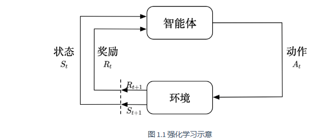

第 1 章 强化学习入门
1.1 强化学习概述
强化学习讨论的是智能体怎么在复杂的、不确定性的环境里面最大化他的奖励。

1.1.1 强化学习与监督学习的区别
监督学习：从标注数据中学习输入到输出的映射 \(f: \mathcal{X} \rightarrow \mathcal{Y}\)
强化学习：智能体通过与环境交互，学习最优策略以最大化累积奖励
| 特性 | 监督学习 | 强化学习 |
|---|---|---|
| 数据来源 | 静态数据集 | 与环境交互 |
| 反馈形式 | 标签（正确答案） | 奖励信号（标量） |
| 学习目标 | 最小化预测误差 | 最大化累积奖励 |
| 决策序列 | 独立同分布 | 时序相关 |
1.1.2 强化学习的核心要素
五元组 \((\mathcal{S}, \mathcal{A}, \mathcal{P}, \mathcal{R}, \gamma)\)：
- \(\mathcal{S}\)：状态空间（State Space）
状态是对世界的描述，不会隐藏世界的信息，观测是对状态的部分描述，可能会遗漏一些信息。当智能体能够完全观测到环境的所有状态的时候，这个环境叫做完全可观测。
- \(\mathcal{A}\)：动作空间（Action space）
在给定的环境中，有效的动作集合被叫做动作空间，动作空间分为离散动作空间和连续动作空间。
- \(\mathcal{P}\)：状态转移概率（Transition probability）
- \(\mathcal{R}\)：奖励函数（Reward function）
我们当前采取了某个动作，可以得到多大的奖励。
在强化学习马尔可夫决策过程（MDP）的标准定义中，奖励函数（\(\mathcal{R}\)）和即时奖励（\(r_{t+1}\)）的核心区别，是「确定性的期望统计量」和「单次随机的实际奖励值」的区别。
【1】即时奖励是一个随机变量，代表「\(t\) 时刻在状态 \(s\) 执行动作 \(a\) 后，\(t+1\) 时刻环境实际返回的、单次采样的奖励数值」。
随机性来源：MDP 的状态转移是随机的（由转移概率 \(p\) 决定），同一个 \((s,a)\)，可能转移到不同的下一状态 \(s'\)，对应得到的即时奖励 \(r\) 也可能不同。
【2】奖励函数它是确定性的函数映射，是给定 \((s,a)\) 条件下，即时奖励 \(r_{t+1}\) 的条件数学期望。
核心含义：输入是当前状态 \(s\) 和动作 \(a\)，输出是一个固定的、统计平均后的期望奖励值，描述的是「在 \(s\) 状态做 \(a\) 动作，平均能拿到多少奖励」。
公式展开：结合转移概率，它的完整计算式为
其中 \(r(s,a,s')\) 是从 \(s\) 执行 \(a\) 转移到 \(s'\) 的即时奖励，本质就是对所有可能的 \(r\) 值，按出现概率加权平均。
- \(\gamma\)：折扣因子（Discount factor），\(\gamma \in [0,1]\)
智能体的核心组成部分
策略
智能体会用策略来选择下一步的动作，策略分为随机性策略和确定性策略。
-
随机性策略：输入一个状态，输出一个概率。这个概率是智能体所有动作的概率，然后对这个概率分布进行采样，可得到智能体将采取的动作。比如可能是有 0.7 的概率往左，0.3 的概率往右，那么通过采样就可以得到智能体将采取的动作。
-
确定性策略：就是智能体直接采取最有可能的动作
价值函数
用价值函数来对当前状态进行评估，价值函数用于评估智能体进入某个状态后，可以对后面的奖励带来多大的影响。价值函数越大，智能体进入这个状态越有利。价值函数是对未来奖励的预测。我们用它来评估状态的好坏。
状态价值函数：
状态-动作价值函数：表明未来可以获得奖励的期望取决于当前的状态和当前的动作
模型
模型表示智能体对环境状态的理解。决定了环境中世界的运行方式。模型决定了下一步的状态，下一步的状态取决于当前的状态以及当前采取的动作。模型由状态转移概率和奖励函数构成。
状态转移概率：
奖励函数：当前状态采取了某个动作，可以得到多大的奖励。
有了策略、价值函数、模型三个组成部分后，就形成了一个马尔可夫决策过程。